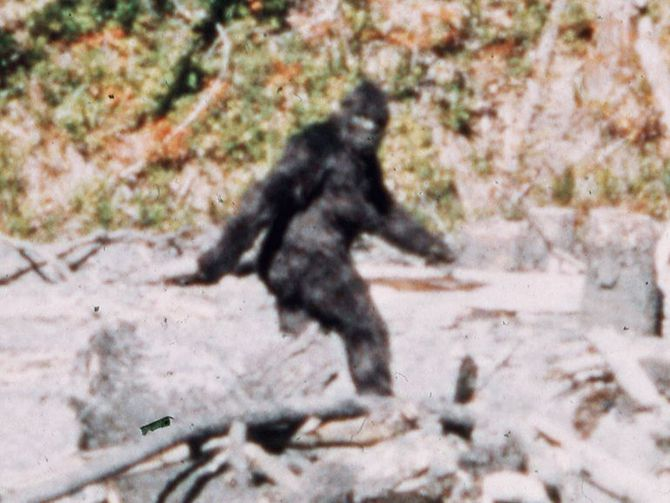
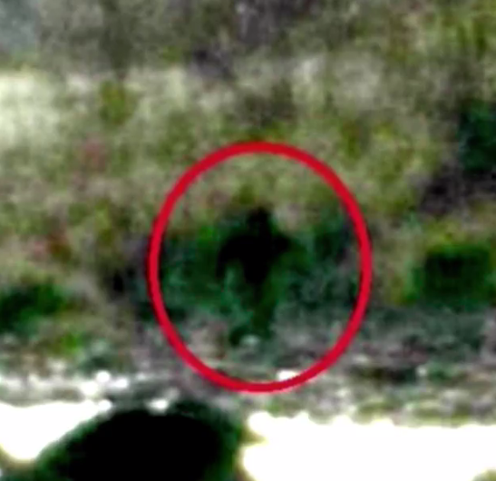
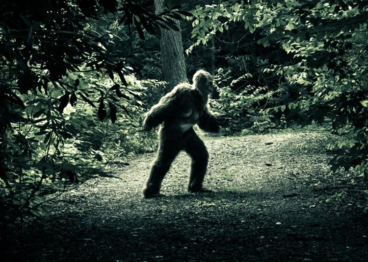

Wild men stories are found among the Pacific Northwest coastal Indian tribes. Anthropologist and cryptozoologist Grover Krantz has written that stories of the Indians which can be confidently related to the Sasquatch correspond to the areas where white Americans have reported similar sightings. According to David Daegling, the legends existed before there was a single name for the creature. They differed in their details both regionally and between families in the same community. Similar accounts and legends of wild men are found on every continent except Antarctica.
Ecologist Robert Pyle argues that most cultures have accounts of human-like giants in their folk history, expressing a need for "some larger-than-life creature."Each language had its own name for the creature featured in the local version of such legends. Many names meant something along the lines of "wild man" or "hairy man", although other names described common actions that it was said to perform, such as eating clams or shaking trees. Chief Mischelle of the Nlaka'pamux at Lytton, British Columbia told such a story to Charles Hill-Tout in 1898; he named the creature by a Salishan variant meaning "the benign-faced-one".
Members of the Lummi tell tales about Ts'emekwes, the local version of Bigfoot. The stories are similar to each other in the general descriptions of Ts'emekwes, but details differed among various family accounts concerning the creature's diet and activities. Some regional versions tell of more threatening creatures. The stiyaha or kwi-kwiyai were a nocturnal race. Children were warned against saying the names, lest the monsters hear and come to carry off a person—sometimes to be killed. In 1847, Paul Kane reported stories by the Indians about skoocooms, a race of cannibalistic wildmen living on the peak of Mount St. Helens in southern Washington state.
Less-menacing versions have also been recorded, such as one by Reverend Elkanah Walker from 1840. Walker was a Protestant missionary who recorded stories of giants among the Indians living near Spokane, Washington. The Indians said that these giants lived on and around the peaks of nearby mountains and stole salmon from the fishermen's nets.
In the 1920s, Indian Agent J. W. Burns compiled local stories and published them in a series of Canadian newspaper articles. They were accounts told to him by the Sts'Ailes people of Chehalis and others. The Sts'Ailes and other regional tribes maintained that the Sasquatch were real. They were offended by people telling them that the figures were legendary. According to Sts'Ailes accounts, the Sasquatch preferred to avoid white men and spoke the Lillooet language of the people at Port Douglas, British Columbia at the head of Harrison Lake. These accounts were published again in 1940. Burns borrowed the term Sasquatch from the Halkomelem sásq'ets and used it in his articles to describe a hypothetical single type of creature portrayed in the local stories.
  